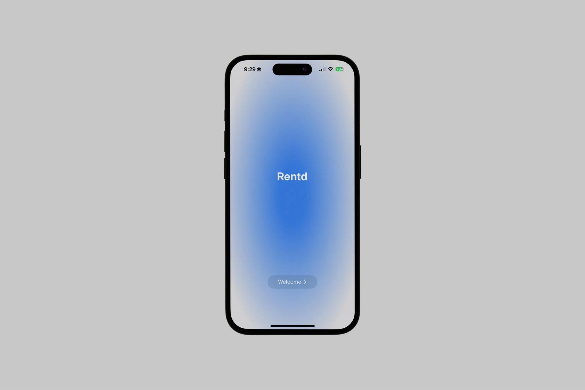

Rented is a peer-to-peer rental platform for urban renters who need everyday items without the cost and clutter of ownership. I designed the full mobile experience over 6 months — from onboarding through browsing, renting, and listing.
Rented
UI Design and Prototyping a mobile app

Overview
What is Rented?
Problem
People regularly pay full price for tools, equipment, and everyday items they'll only use once or twice — a problem that's worse for urban renters with limited storage who can't justify owning things they rarely need. Existing rental options are either industrial (Home Depot, Sunbelt) or buried in marketplace noise (Facebook, Craigslist) with no trust layer. Rented set out to build a peer-to-peer rental platform that makes borrowing from your community as simple and safe as buying online — while reducing the waste of single-use ownership.
My Role
I was brought on as the sole designer to create Rented's mobile experience from the ground up — defining the onboarding flow, home and explore experience, product pages, and user profiles. My biggest design challenge was creating a browsing experience that felt clear and navigable across wildly diverse item categories, from power tools to camping gear to kitchen appliances.
Process
Research & Inspiration
Before opening Figma, I spent time studying how existing rental and marketplace platforms handle the core experience. I looked at apps like Hygglo, Facebook Marketplace, Craigslist, OfferUp, and Yoodlize — paying attention to how they onboard new users, structure browsing across diverse item categories, and build trust between strangers transacting for the first time. A few patterns stood out: most platforms front-load heavy registration forms that kill momentum, and almost none handle the renter-to-lister duality well — you're either buying or selling, never both in the same flow. These gaps directly shaped my approach for Rented.
Information Architecture
Rented has a two-sided problem: the same user might browse for a drill on Monday and list their camping gear on Tuesday. I mapped out the core user flows — onboarding, browsing and renting an item, and listing a belonging — to make sure the app's structure supported both modes without forcing users to context-switch. The onboarding flow was deliberately lightweight: connect with an existing email account, no lengthy registration forms. The goal was to reduce friction to the point where someone could go from download to browsing in under a minute.
Exploration
With the flows defined, I moved into wireframing in Figma, exploring multiple layout directions for each key screen. The homepage was the hardest call — I explored a category-grid approach (like eBay), a feed-based layout (like Facebook Marketplace), and a minimal focused landing (inspired by ChatGPT's calm entry point). I went with the minimal direction because Rented's catalog was still growing, and a sparse layout would feel intentional rather than empty. A grid full of half-populated categories would have undermined trust in a new platform.
For the profile page, I referenced selling platforms like eBay and Grailed alongside social profiles like Instagram — the engineering team wanted follower/following data to encourage community, so I needed to balance marketplace utility with social familiarity. I landed on a tab navigation system with three sections to separate available items, currently rented items, and activity — keeping the layout clean while accommodating both sides of the platform.
Prototyping & Testing
Once the final interface was approved, I built a functional prototype using Play 2, which let me test the app directly on my phone throughout development. This wasn't just for presentation — Play 2 supported functional input fields, so both the engineering team and I could enter real emails and passwords to stress-test the onboarding flow on-device. Testing on an actual phone screen surfaced spacing and touch-target issues that weren't visible in Figma, and I iterated on several screens based on what felt off in-hand versus on-screen.
Outcome & Reflection
After 6 months of designing, prototyping, and iterating alongside the engineering team, I delivered the final designs and a fully functional prototype. The handoff included the complete design system, annotated screens for all core flows, and interactive prototype links the team could test on their own devices.
The engineering team was aligned on the direction — the onboarding flow, profile structure, and product pages all held up through review. The main feedback centered on the explore page, where the team wanted a simpler layout to better surface available products, and the addition of filter and sort functionality to help users navigate across diverse item categories. That feedback validated a tension I'd felt throughout the project: designing a browsing experience for a platform where the inventory ranges from power drills to camping tents is a fundamentally different problem than a single-category marketplace.
The app is currently on hold as the engineering team shifted focus to other priorities. While I didn't get to see Rented ship, the project sharpened how I think about designing two-sided platforms, structuring flows for diverse content types, and working within the constraints of a small team on a tight timeline.
If I had more time, I would:
- Run usability tests with 5-8 target users to validate the browsing and onboarding flows before handoff.
- Explore the filter and sort patterns more deeply - the explore page needed more iteration and I'd want to test multiple approaches.
- Build out the trust layer (ratings, verification, transaction history) that a peer-to-peer platform needs to feel safe at scale.
- Design the lister-side experience with the same depth as the renter side - listing an item should feel just as effortless as renting one.